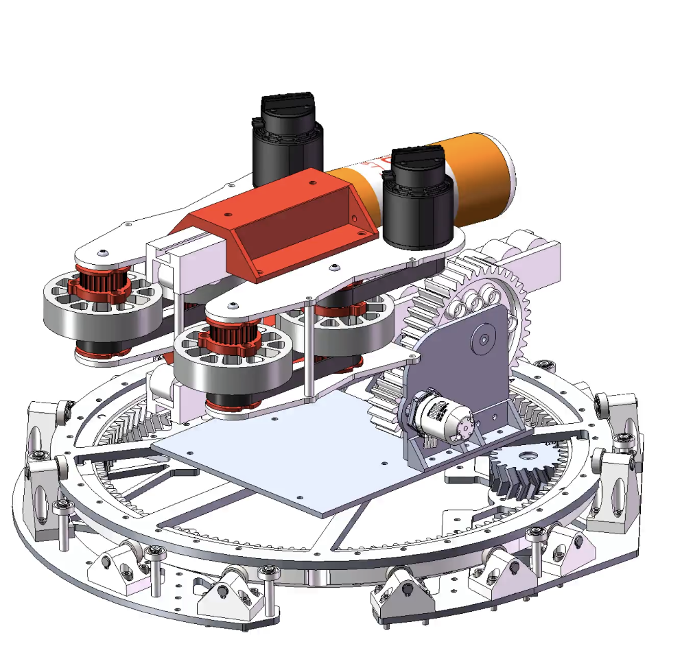
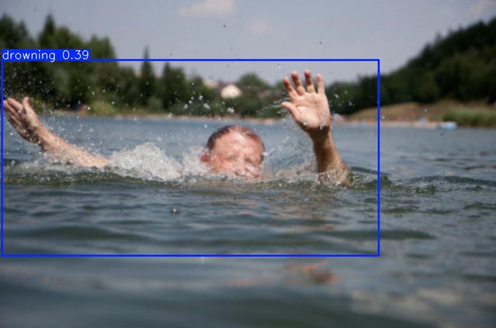
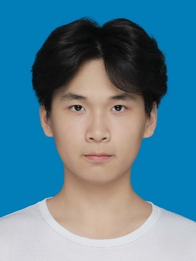
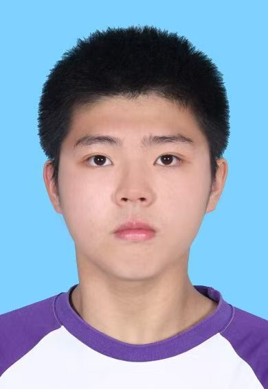

High degree of automation
Powered by an advanced YOLOv8n algorithm and a PID control system, AquaSentry identifies the drowning person and launches the lifebuoy with precision — with no human intervention required.
AquaSentry watches the water, identifies a drowning person in real time, tracks the target and fires a self-inflating lifebuoy — automatically. Rescue no longer depends on who happens to be looking.

Through innovative hardware design and cutting-edge software technology, AquaSentry can quickly and accurately locate a drowning person in a wide range of water environments and automatically launch a self-inflating lifebuoy — greatly improving rescue efficiency and reducing the dependence on manpower.
Powered by an advanced YOLOv8n algorithm and a PID control system, AquaSentry identifies the drowning person and launches the lifebuoy with precision — with no human intervention required.
A detachable design weighing only 9 kg makes AquaSentry easy to carry and deploy. It works efficiently in indoor pools, outdoor lakes and post-disaster emergency rescue alike.
The combination of hardware and software keeps every rescue task accurate even under high-pressure conditions, outperforming comparable products by a wide margin.
Trained on 12,000 labelled drowning images with data augmentation.
Local offline inference on an NVIDIA GeForce RTX 3060 Laptop GPU.
Detachable, two-person carry, deployable in under a minute.
Stable multi-protocol link between vision, control and launcher.
Follow the path from a person in the water to a self-inflating lifebuoy. This animation illustrates the concept; it is not test footage.
The camera monitors the water for a person in distress.
Simulated example · not actual robot measurements
θ = ½ sin⁻¹((9.81 × 9) / 10²) ≈ 31.0°
Idealized example: launch and landing at the same height, with no air resistance or wind. The scene is not to scale; actual robot settings depend on its measurements and calibration.
The official promotional film presented at the national finals — where the team took the Innovation Potential Award, the highest gold-level honour of the competition's Emerging Talent track, granted to only 20 projects nationwide.
In the film: the team walks through why the robot exists, how the vision model was trained, how the two-degree-of-freedom launcher was engineered, and what a faster response means for the people still in the water.
Four steps, executed entirely on the device, without waiting for a human operator.
An ultra-high-speed industrial camera keeps the water surface under continuous surveillance, day and night.
Always on · no blind spotsThe exclusive YOLOv8n model separates a drowning person from swimmers, reflections and surface clutter.
98.7% accuracyA PID control loop and a high-precision IMU hold the target centred while the launcher aligns itself.
Pitch + yaw, two degrees of freedomTwo brushless motors spin a four-roller friction mechanism that throws the self-inflating lifebuoy to the target.
Long-range, precise deliveryFour tightly coupled systems turn a camera frame into a lifebuoy in the water — mechanics, sensing, algorithms and control.
It has two degrees of freedom of pitch and yaw rotation. Combined with the four-roller high-speed friction launch mechanism driven by two brushless motors, it can flexibly adjust the launch angle and achieve long-distance, accurate launch of the self-inflating lifebuoy.
Equipped with a high-definition, ultra-high-speed industrial camera sensor and matched with the PID control algorithm, it locates and automatically tracks the drowning person in real time across environments, providing reliable support for the rescue.
Based on 12,000 labelled drowning images and data augmentation technology, an exclusive YOLOv8n model has been successfully trained, achieving 98.7% recognition accuracy and a 1.12% packet loss rate. AquaSentry runs local offline inference on an NVIDIA GeForce RTX 3060 Laptop GPU, at only 2 ms per frame.
The control system is built on an STM32 self-developed development board and a high-precision IMU inertial navigation chip. It supports multiple communication protocols and keeps positioning and control accurate throughout the launch process.
A high-definition, ultra-high-speed industrial camera sensor paired with a PID control algorithm locates and automatically tracks the drowning person across environments in real time — reliable support for the rescue that follows. The clip is raw field footage: the box holds on the swimmer while the surface keeps moving.
Trained on 12,000 labelled drowning images with data augmentation, the exclusive YOLOv8n model reaches 98.7% recognition accuracy with a 1.12% packet loss rate — 2 ms per frame, running locally on an RTX 3060 Laptop GPU. The clip walks through the aiming and launcher control code that runs on the machine itself.

Drowning is one of the leading causes of accidental death worldwide, and in China fewer than 11.34% of drowning incidents end in a successful rescue. Visibility under water is poor, the surface is cluttered, and the window to intervene is short. AquaSentry removes the slowest link in that chain — the moment someone has to notice.
Anywhere people swim, train or work next to water. We are looking for pilot sites and partners to deploy the first units.

Campus lakes, swimming programmes and boarding schools that need supervision beyond staffing limits.

Public parks, waterfront promenades and scenic areas with open water and seasonal visitor peaks.

Reservoirs, dams and flood-control facilities where remote water bodies stay unattended for days.
We have been friends for a long time and come from the same robotics team. We trust each other, we enjoy building together, and we share one ideal: to help others with our robot building capabilities.
“If there had been a lifebuoy on the bank…” — a classmate drowned in the campus lake last summer, and the body was only recovered at dawn because the water was too murky to search.
Sam opens the film with that night and turns it into a direction: an FRC robot could be built into a lifesaver. He framed the product thesis, led the team through the national finals of the China International College Students' Innovation Competition, and owns the roadmap, the strategy and every external conversation AquaSentry has.
Angye presents the machine itself in the film: an AI-networked surface rescue robot that identifies a drowning person on its own and patrols a lake 24 hours a day without an operator. He owns the architecture — the control board, the drive and power system, the link between perception and launcher, and the integration that makes four subsystems behave as one unit on open water.

Chuhang owns perception. In the film he stands on the bank and shows the robot picking a swimmer in distress out of the water in real time, then cuts to the training scripts behind it. He built the recognition pipeline — frame sampling, inference, target lock and the trigger that fires the launcher — and validates it on real water rather than only on a benchmark.
Kairui built what the model learns from: a labelled library of drowning images that has now passed 12,000 frames, expanded with data augmentation, and an exclusive YOLOv8n model trained on it. His optimisation work brings inference down to 2 ms per frame at 98.7% recognition accuracy, which is what makes a rescue decision possible before a person could react.
Zhengyuan turned the concept into hardware. He designed the two-degree-of-freedom arm and the four-roller friction launcher that sends the self-inflating lifebuoy 10–30 m with accuracy, and carried the design through to a granted utility-model patent; the algorithm and system now hold a software copyright as well.

Hao makes the case in numbers. In the film he walks through the arithmetic of a drowning: survival falls with every minute of delay, and Hydro AI-D stretches the golden rescue window to 27 minutes. He turns that into pilots with schools, parks and reservoir operators, public-interest campaigns, and the commercial plan behind the product.
Roles mirror the film. Each member presents the part of the system they built in the competition film above — Sam opens with why the robot exists, and the team then walks through the machine, perception, data, mechanics and impact in turn.
We are opening pilot deployments with schools, park authorities and reservoir operators. Tell us about your site and we will come back with a deployment plan.